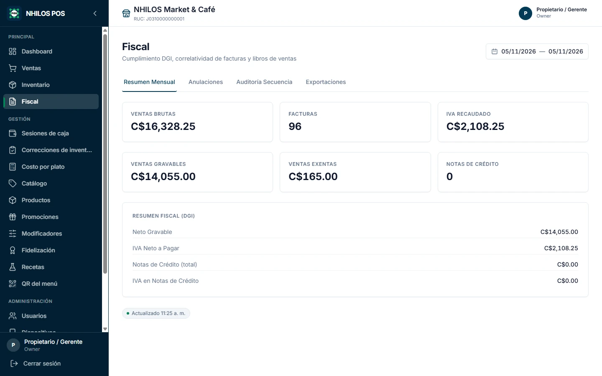

Software de punto de venta · Nicaragua
Sistema POS en Nicaragua: el control de tu venta, a la medida de tu negocio
Un punto de venta local-first que sigue cobrando sin internet, con el nivel de control que tu negocio elija: venta y reventa simple, o recetas e insumos que se descuentan por plato. Empieza con el nivel que tu operación necesita hoy y activa más control cuando la pida.
Elige cómo vendes:
A¿Vendes lo que compras? B¿Lo que vendes se cocina?Las capturas de esta página son de la interfaz real de NHILOS POS · datos de demostración.
Reconoce tu operación
¿De qué tipo es tu negocio? Dos formas de vender, un mismo sistema
Hay dos formas de vender, y el sistema las nombra con las palabras de tu negocio: quien vende lo que compra (una tienda, una miscelánea, un puesto que revende botanas y bebidas embotelladas) opera en modo simple, con ventas, stock y métricas, sin recetas. Quien cocina lo que vende (un restaurante, una cafetería, la cocina de un food park) activa recetas e insumos y cada plato vendido descuenta sus ingredientes. Elige tu lado y mira qué cambia.
Vendes lo que compras: reventa y mostrador sin recetas
Alta de producto con costo y precio, control de stock, arqueos y métricas del turno. Es la operación de mostrador y reventa pura: botanas, bebidas embotelladas, vender sin preparar nada.

Captura real de la terminal · datos de demostración
Lo que se cocina: recetas, insumos y costo por plato
Receta por plato con sus insumos: cada venta descuenta lo que consumió y deja el costo por plato calculado.

Captura real del panel de administración · datos de demostración
Los dos modos conviven: el caso food park
Un puesto que revende en modo simple puede operar junto a una cocina con recetas, en el mismo sistema, y la administración del food park revisa la operación de los puestos desde su cuenta. La escalera es continua, no binaria: el mismo producto sirve al puesto de botanas y a la cocina.
La categoría, explicada
¿Qué es un sistema POS y qué hace por tu negocio?
Un punto de venta moderno para un negocio de mostrador en Nicaragua hace cuatro cosas, y las registra todas:
- Cobra rápido en córdobas y dólares.
- Emite tickets con consecutivo inalterable.
- Registra cada evento con usuario y hora.
- Convierte la operación en datos que el dueño puede leer: qué se vendió, qué quedó en stock, si la caja cuadró.
Qué cambia frente al cuaderno, el Excel o un POS fiscal viejo
- Donde hoy hay papel y memoria: evidencia y auditoría por usuario.
- Lo que hoy armaste a mano para tu contador: datos que le llegan limpios y en orden.
- Lo que hoy se detiene si la red se cae: una operación que no depende del internet.

Captura real del panel de administración · datos de demostración
La decisión del comprador
¿Cuánto control necesitas? Elige el nivel, no aceptes uno fijo
El control no es un paquete que compras de una vez: se empieza donde tu negocio está hoy y sube cuando la operación lo pide. Se comienza en modo simple, y recetas, insumos y kardex se activan cuando el negocio los necesita, sin cambiar de producto. Un food park puede tener puestos en ambos modos a la vez.
Modo simple: lo que controlas desde el día uno
- Catálogo con costo y precio de venta.
- Stock de lo que vendes y arqueos del turno.
- Métricas del turno que el dueño puede leer.
Recetas activadas: lo que añade el mismo sistema
- Receta por plato con sus insumos.
- Descuento de insumos en cada venta.
- Costo por plato calculado.
- Kardex con el costo recalculado al recibir un lote.
Grabación real del panel de administración · datos de demostración
Entra por el tuyo
Para qué negocios sirve: entra por el tuyo
Restaurantes de alta rotación
Comandas con modificadores, recetas que se descuentan por plato y el cierre con arqueo.
Food parks y food courts
Puestos en modo simple y cocinas con recetas conviven en el mismo sistema.
Cafeterías y comercios de mostrador
Modificadores por bebida y reventa simple de empaquetados.
Las objeciones grandes
Las tres preguntas que deciden: sin internet, DGI e inventario
Tres preguntas llegan en toda cotización, y la respuesta corta ya te dice si el sistema resuelve tu operación.
Sin internet
Detalle de método: página propia del temaLa terminal enrolada sigue cobrando con su catálogo cargado, y todo lo vendido queda registrado en orden para sincronizar cuando vuelve la conexión.
Grabación real de la terminal · datos de demostración
DGI y facturación
mecánica de facturación DT 09-2007: qué garantiza el sistema y qué te corresponde a tiMecánica DT 09-2007 con consecutivo inalterable y anulación con motivo auditado. La autorización la posee tu negocio como contribuyente; el sistema garantiza la mecánica.

Captura real del panel de administración · datos de demostración
Cada venta descuenta lo que consumió, en recetas o en stock simple, y el costo queda reflejado donde el dueño puede verlo.

Captura real del panel de administración · datos de demostración
Operación diaria con facturación: caja, bar y comida rápida
El cierre de caja con arqueo, el ritmo del bar y la velocidad del mostrador son ángulos operativos del mismo sistema; la parte fiscal de la operación diaria se detalla en mecánica de facturación DT 09-2007: qué garantiza el sistema y qué te corresponde a ti.
La pregunta del presupuesto
¿Cuánto cuesta un sistema POS en Nicaragua?
Depende de la operación: cuántas terminales necesitas, cuántos locales venden y si activas recetas e insumos. Los planes públicos, los setups y la letra pequeña están en una sola tabla: ver planes y precios de NHILOS POS.
La pregunta del hardware
¿Necesito equipo especial?
NHILOS POS opera en terminales táctiles Android. Si ya tienes equipo, se evalúa antes de empezar; si no, se cotiza un kit con proveedores locales. Precios y compatibilidades de hardware se definen al cotizar.
Antes de decidir
Preguntas frecuentes sobre sistemas POS en Nicaragua
¿Qué es un sistema POS local-first?
NHILOS POS es un sistema POS local-first en Nicaragua: trabaja primero en tu terminal y después en la nube, así lo esencial para vender no depende del internet. El nivel de control lo eliges tú: venta y reventa simple, o recetas e insumos que se descuentan por plato.
¿Sirve para una tienda que no cocina?
Sí: en Nicaragua, NHILOS POS opera en modo simple para negocios que venden lo que compran. Ventas, stock, arqueos y métricas del turno, sin recetas y sin pasos de más.
¿Funciona sin internet?
Sí: en Nicaragua, NHILOS POS sigue cobrando sin internet. La terminal enrolada conserva su catálogo y cada venta queda registrada en orden para sincronizar cuando vuelve la conexión.
¿Sirve para la DGI?
NHILOS POS emite facturación conforme a la mecánica de la DT 09-2007 en Nicaragua, con numeración consecutiva inalterable y anulaciones con motivo auditado. La autorización la posee tu negocio como contribuyente; el sistema garantiza la mecánica. Ver mecánica de facturación DT 09-2007: qué garantiza el sistema y qué te corresponde a ti.
¿Cuánto cuesta un sistema POS en Nicaragua?
En Nicaragua, NHILOS POS se cotiza según tu operación: cuántas terminales necesitas, cuántos locales venden y si activas recetas e insumos. Ver planes y precios de NHILOS POS.
¿Se puede empezar simple y activar recetas después?
Sí: en Nicaragua, NHILOS POS empieza en modo simple y activa recetas, insumos y kardex cuando el negocio lo pida, sin cambiar de producto.
El siguiente paso
Solicita una demo con datos reales de tu operación
La demo se arma con un escenario según tu tipo de negocio y tu prioridad: si vendes lo que compras o si lo que vendes se cocina. Cuéntanos cómo opera tu negocio y la demo muestra eso.